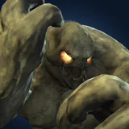
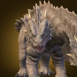
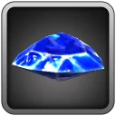
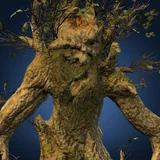

Mana and casting
How units gain mana and cast abilities.
Most units carry a mana bar. It fills as the unit lands attacks and as it takes damage, and when it is full the unit casts its ability and the bar empties. This page gives the exact sums. For the fight around them see Combat.
Gaining mana
Every unit starts every fight with an empty bar. Nothing is carried over from the round before. Mana comes from four places.
Landing an attack
Each attack that lands gives the attacker mana equal to the damage of the blow divided by 7.5, to at most 10 mana for one attack. The damage used is the attack's own figure after its roll, its damage bonuses and any critical hit, but before the target's armour and shields. Armour on the target therefore does not slow the attacker's mana. An attack of 75 damage or more gives the full 10. An attack that misses or is evaded gives nothing, and extra attacks granted by effects give mana like any other attack. The last columns show the same hit for a unit whose mana gain is changed by -50% or +43%.
| Attack damage | Base mana | With -50% mana gain | With +43% mana gain |
|---|---|---|---|
| 15 | 2 | 1 | 2.86 |
| 30 | 4 | 2 | 5.72 |
| 45 | 6 | 3 | 8.58 |
| 60 | 8 | 4 | 11.44 |
| 75 | 10 | 5 | 14.3 |
| 112.5 | 10 | 5 | 14.3 |
| 150 | 10 | 5 | 14.3 |
| 300 | 10 | 5 | 14.3 |
Taking damage
Each time a unit takes damage it gains mana equal to the damage divided by 10, to at most 10 mana for one instance of damage. Here the figure is the damage after armour or magic resistance (Damage, armour and resistance), and damage soaked by a shield still counts. Every source counts separately: attacks, abilities, each tick of damage over time and triggered effects. One hit of 100 or more gives the full 10, so many small hits fill a bar faster than one huge one. The health lost to overtime gives no mana.
| Damage taken | Base mana | With -50% mana gain | With +43% mana gain |
|---|---|---|---|
| 20 | 2 | 1 | 2.86 |
| 40 | 4 | 2 | 5.72 |
| 60 | 6 | 3 | 8.58 |
| 80 | 8 | 4 | 11.44 |
| 100 | 10 | 5 | 14.3 |
| 150 | 10 | 5 | 14.3 |
| 200 | 10 | 5 | 14.3 |
| 400 | 10 | 5 | 14.3 |
Mana regeneration
Some alliances and items add mana every second. It arrives smoothly, a little each tick, whatever the unit is doing, including while it is stunned or silenced.
Restored mana
A few effects hand over a lump of mana at once. Others burn mana away from an enemy. Both are listed in the table of mana modifiers below.
In every case the cap on a single gain is applied first and a mana gain bonus or penalty is applied after it, so a bonus can lift one attack above the cap. The bonus does not change regeneration or restored mana. Mana never rises above the unit's maximum, and anything over is lost, not saved for the next cast.
Attacks to a full bar, unit by unit
This table shows each unit's average attack damage at one, two and three stars, and counts attacks alone. Mana per attack is the average over every damage roll the unit can make. Because the limit of 10 mana applies to each blow, a unit whose rolls reach above 75 damage averages a little less mana than its average damage would suggest. Attacks to fill is the bar divided by that average, rounded up. Mana from damage taken comes on top, so units in the thick of the fight cast sooner than the last column suggests.
| Unit | Tier | Maximum mana | Average attack damage | Mana per attack | Attacks to fill |
|---|---|---|---|---|---|
 Gutter Scavenger Gutter Scavenger | Tier 1 | 100 | 55 / 110 / 220 | 7.33 / 10 / 10 | 14 / 10 / 10 |
 Spire Acolyte Spire Acolyte | Tier 1 | 100 | 42.5 / 85 / 170 | 5.67 / 10 / 10 | 18 / 10 / 10 |
 Drowned Pikeman Drowned Pikeman | Tier 1 | 75 | 72.5 / 145 / 290 | 9.38 / 10 / 10 | 8 |
 Bog Hexer Bog Hexer | Tier 1 | 100 | 50 / 100 / 200 | 6.67 / 10 / 10 | 15 / 10 / 10 |
 Ashen Pilgrim Ashen Pilgrim | Tier 1 | 100 | 50 / 100 / 200 | 6.67 / 10 / 10 | 15 / 10 / 10 |
 Grave Archer Grave Archer | Tier 1 | 100 | 53 / 106 / 212 | 7.07 / 10 / 10 | 15 / 10 / 10 |
 Thornback Boar Thornback Boar | Tier 1 | 60 | 52.5 / 105 / 210 | 7 / 10 / 10 | 9 / 6 / 6 |
 Pit Imp Pit Imp | Tier 1 | 100 | 55 / 110 / 220 | 7.33 / 10 / 10 | 14 / 10 / 10 |
 Rift Mote Rift Mote | Tier 1 | 100 | 45 / 90 / 180 | 6 / 10 / 10 | 17 / 10 / 10 |
 Oath Cutter Oath Cutter | Tier 1 | 100 | 60 / 120 / 240 | 8 / 10 / 10 | 13 / 10 / 10 |
 Gargoyle Gunner Gargoyle Gunner | Tier 1 | 100 | 55 / 110 / 220 | 7.33 / 10 / 10 | 14 / 10 / 10 |
 Thornwood Seer Thornwood Seer | Tier 1 | 80 | 45 / 90 / 180 | 6 / 10 / 10 | 14 / 8 / 8 |
 Mire Skirmisher Mire Skirmisher | Tier 1 | 40 | 47.5 / 95 / 190 | 6.33 / 10 / 10 | 7 / 4 / 4 |
 Hive Skulker Hive Skulker | Tier 1 | 75 | 50 / 100 / 200 | 6.67 / 10 / 10 | 12 / 8 / 8 |
 Chainwarden Chainwarden | Tier 2 | 100 | 50 / 100 / 200 | 6.67 / 10 / 10 | 15 / 10 / 10 |
 Cog Sapper Cog Sapper | Tier 2 | 100 | 55 / 110 / 220 | 7.33 / 10 / 10 | 14 / 10 / 10 |
 Saw Rigger Saw Rigger | Tier 2 | 100 | 57.5 / 115 / 230 | 7.67 / 10 / 10 | 14 / 10 / 10 |
 Riftlance Duelist Riftlance Duelist | Tier 2 | 100 | 67.5 / 135 / 270 | 9 / 10 / 10 | 12 / 10 / 10 |
 Hellblade Reaver Hellblade Reaver | Tier 2 | 75 | 92.5 / 185 / 370 | 9.63 / 10 / 10 | 8 |
 Marsh Hag Marsh Hag | Tier 2 | 100 | 45 / 90 / 180 | 6 / 10 / 10 | 17 / 10 / 10 |
 Night Sentinel Night Sentinel | Tier 2 | 100 | 65 / 130 / 260 | 8.67 / 10 / 10 | 12 / 10 / 10 |
 Drowned Wailer Drowned Wailer | Tier 2 | 60 | 57.5 / 115 / 230 | 7.67 / 10 / 10 | 8 / 6 / 6 |
 Oathkeeper Thane Oathkeeper Thane | Tier 2 | 75 | 60 / 120 / 240 | 8 / 10 / 10 | 10 / 8 / 8 |
 Gate Duelist Gate Duelist | Tier 2 | 100 | 67.5 / 135 / 270 | 9 / 10 / 10 | 12 / 10 / 10 |
 Quillback Quillback | Tier 2 | 30 | 115 / 230 / 460 | 10 | 3 |
 Thorn Caller Thorn Caller | Tier 2 | 80 | 60 / 120 / 240 | 8 / 10 / 10 | 10 / 8 / 8 |
 Banner Squire Banner Squire | Tier 2 | 100 | 55 / 110 / 220 | 7.33 / 10 / 10 | 14 / 10 / 10 |
 Jade Drakeling Jade Drakeling | Tier 2 | 100 | 55 / 110 / 220 | 7.33 / 10 / 10 | 14 / 10 / 10 |
 Ashen Abbess Ashen Abbess | Tier 3 | 100 | 50 / 100 / 240 | 6.67 / 10 / 10 | 15 / 10 / 10 |
 Pack Warden Pack Warden | Tier 3 | 100 | 75 / 150 / 360 | 9.82 / 10 / 10 | 11 / 10 / 10 |
 Hollow Singer Hollow Singer | Tier 3 | 100 | 42.5 / 85 / 204 | 5.67 / 9.94 / 10 | 18 / 11 / 10 |
 Moonless Alpha Moonless Alpha | Tier 3 | 100 | 55 / 110 / 264 | 7.33 / 10 / 10 | 14 / 10 / 10 |
 Soul Reaper Soul Reaper | Tier 3 | 100 | 82.5 / 165 / 396 | 10 | 10 |
 Fen Mystic Fen Mystic | Tier 3 | 70 | 55 / 110 / 264 | 7.33 / 10 / 10 | 10 / 7 / 7 |
 Tidal Stalker Tidal Stalker | Tier 3 | 75 | 55 / 110 / 264 | 7.33 / 10 / 10 | 11 / 8 / 8 |
 Spire Marksman Spire Marksman | Tier 3 | 100 | 137.5 / 275 / 660 | 10 | 10 |
 Ashwalker Ashwalker | Tier 3 | 80 | 55 / 110 / 264 | 7.33 / 10 / 10 | 11 / 8 / 8 |
 Clockwork Savant Clockwork Savant | Tier 3 | 100 | 66 / 132 / 317 | 8.8 / 10 / 10 | 12 / 10 / 10 |
 Cinder Hatchmother Cinder Hatchmother | Tier 3 | 100 | 60 / 120 / 288 | 8 / 10 / 10 | 13 / 10 / 10 |
 Gnawing Wight Gnawing Wight | Tier 3 | 75 | 57.5 / 115 / 276 | 7.67 / 10 / 10 | 10 / 8 / 8 |
 Ember Duelist Ember Duelist | Tier 3 | 100 | 90 / 180 / 432 | 10 | 10 |
 Briar Shaper | Tier 3 | 100 | 60 / 120 / 288 | 8 / 10 / 10 | 13 / 10 / 10 |
 Storm Augur Storm Augur | Tier 4 | 100 | 57 / 114 / 228 | 7.6 / 10 / 10 | 14 / 10 / 10 |
 Pit Marshal Pit Marshal | Tier 4 | 100 | 115 / 230 / 460 | 10 | 10 |
 Bearclaw Wilder Bearclaw Wilder | Tier 4 | 60 | 55 / 110 / 220 | 7.33 / 10 / 10 | 9 / 6 / 6 |
 Plague Cantor Plague Cantor | Tier 4 | 100 | 55 / 110 / 220 | 7.33 / 10 / 10 | 14 / 10 / 10 |
 Veiled Seer Veiled Seer | Tier 4 | 100 | 100 / 200 / 400 | 10 | 10 |
 Drowned Behemoth Drowned Behemoth | Tier 4 | 100 | 65 / 130 / 260 | 8.67 / 10 / 10 | 12 / 10 / 10 |
 Blastcap Sapper Blastcap Sapper | Tier 4 | 100 | 55 / 110 / 220 | 7.33 / 10 / 10 | 14 / 10 / 10 |
 Skyfall Archer Skyfall Archer | Tier 4 | 70 | 75 / 150 / 300 | 9.82 / 10 / 10 | 8 / 7 / 7 |
 Duskguard Duskguard | Tier 4 | 80 | 120 / 240 / 480 | 10 | 8 |
 Hollow Strider Hollow Strider | Tier 4 | 100 | 75 / 150 / 300 | 9.82 / 10 / 10 | 11 / 10 / 10 |
 Rootwarden Rootwarden | Tier 4 | 100 | 75 / 150 / 300 | 9.48 / 10 / 10 | 11 / 10 / 10 |
 Grey Confessor Grey Confessor | Tier 4 | 60 | 65 / 130 / 260 | 8.67 / 10 / 10 | 7 / 6 / 6 |
 Brood Queen Brood Queen | Tier 4 | 100 | 75 / 150 / 300 | 9.82 / 10 / 10 | 11 / 10 / 10 |
 Spire Colossus Spire Colossus | Tier 5 | 50 | 55 / 110 / 220 | 7.33 / 10 / 10 | 7 / 5 / 5 |
 Mire King | Tier 5 | 100 | 190 / 380 / 760 | 10 | 10 |
 Deep Basilisk Deep Basilisk | Tier 5 | 100 | 77.5 / 155 / 310 | 10 | 10 |
 Hourblade Hourblade | Tier 5 | 100 | 155 / 310 / 620 | 10 | 10 |
 Cinder Wyrmrider Cinder Wyrmrider | Tier 5 | 50 | 65 / 130 / 260 | 8.67 / 10 / 10 | 6 / 5 / 5 |
 Abyssal Archon Abyssal Archon | Tier 5 | 100 | 70 / 140 / 280 | 9.33 / 10 / 10 | 11 / 10 / 10 |
 Blood Matriarch Blood Matriarch | Tier 5 | 100 | 100 / 200 / 400 | 10 | 10 |
 Soul Tyrant Soul Tyrant | Tier 5 | 100 | 70 / 140 / 280 | 9.24 / 10 / 10 | 11 / 10 / 10 |
 Duskmother Duskmother | Tier 5 | 100 | 130 / 260 / 520 | 10 | 10 |
 Spire Exemplar Spire Exemplar | Tier 5 | 100 | 100 / 200 / 400 | 10 | 10 |
Casting
A unit with a full bar casts the next time it is free to choose an action. Casting comes before attacking and moving. A unit in the middle of an attack swing or a step finishes that first, so a cast can come a moment after the bar fills. The cast goes ahead only if all of these hold:
- The unit is not stunned or silenced.
- There is at least one enemy that can be targeted.
- If the ability has a cast range, its target is within that range. At present these are Barbed Volley, Hurled Hatchets, Skyfall Arrow, Wyrmfire Gout, Jade Breath. The target is the enemy the unit is fighting, or the closest enemy if it has none.
Abilities without a cast range do not wait for a good moment. A unit whose ability strikes the cells around it casts as soon as its bar is full, even if no enemy is yet beside it, so where you stand such a unit matters.
Starting a cast begins the ability's cast point: the unit stands still for that long and then the ability takes effect. Cast points run from 0 to 2 seconds and are shown on each ability page. Unlike attacks, the cast point is not shortened by attack speed. The mana is spent, and the bar set to zero, at the moment the cast point completes. The ability's effects are applied in the same tick, and effects that fire when a unit casts go off after them.
While the bar is full, further mana is wasted, including during the cast point. Once the bar is empty the unit gains mana again at once, and it can cast as many times in a fight as it can fill the bar.
What stops a cast
- Silence stops a unit from starting a cast, and cancels a cast that is in its cast point. The unit keeps attacking and moving. Silences: Silenced (from unit abilities), Pact Silence, Static Shock, Sentenced, Silenced (from items), Hexed, and for the whole fight by Frenzy Visage.
- Stun stops everything, casts included, and cancels a cast in its cast point. Stuns: Stunned (from unit abilities), Slammed, Stunned (from items), Swept Aloft.
- No target. If every enemy is untargetable, or an ability with a cast range has nobody in range, the unit holds its full bar and carries on attacking or moving until it can cast.
- Death. A unit that dies during its cast point does not cast.
A cancelled cast costs nothing. The mana was never spent, so the unit keeps its full bar and casts again as soon as it is able. A silenced or stunned unit also goes on gaining mana from the damage it takes. Being disarmed or rooted does not stop a cast. How long these effects last and how they stack is covered in How status effects work.
Units with no mana
A unit with no mana bar never gains mana from anything and never casts. Mana burn does nothing to it. It can still carry passive effects that fire on their own conditions.
Units without mana: Rift Echo, Greater Rift Echo, Thorn Hound, Carrion Wing, Elder Thornwyrm, Thorn Sapling, Bramble Golem, Dire Wolf, Mire Ward, Cinder Mite, Spire Bear, Skitterling, Brood Hatchling, Pact Archer, Pact Bruiser, Pit Golem, Stormhide Beast, Grave Shambler.
Placeables without mana: Spiked Palisade, Straw Decoy, Sunfruit Tree, Mending Totem, Restless Gravestone. See Summons and placeables.
Mana modifiers
Everything in the game that changes how fast a bar fills. Where several numbers are separated by a slash they are the values at each step of an alliance or each star. The last column says who receives it and, for an effect that goes off at certain moments, when. Where a source does two things, the two columns list them in the same order. The stats themselves are defined in the stat reference.
| Source | Kind | What it does | Applies to |
|---|---|---|---|
 Cinder Core | Item | +7 mana per second | the wearer |
 Wellspring Brooch Wellspring Brooch | Item | +4 mana per second | the wearer |
 Brookwalker Sandals Brookwalker Sandals | Item | restores 25 mana | the wearer and all allies within 2 cells, every 10 seconds |
 Stepstone Charm Stepstone Charm | Item | restores 60 mana | the wearer, at the start of combat |
 Wayfarer's Lantern Wayfarer's Lantern | Item | +5 mana per second | the wearer |
 Oxhide Helm Oxhide Helm | Item | -50% mana from attacks and from damage taken | the wearer |
 Squall Sceptre Squall Sceptre | Item | +10 mana per second | the wearer |
 Hourglass Prism Hourglass Prism | Item | +2 mana per second; +43% mana from attacks and from damage taken | the wearer |
 Seer's Lens Seer's Lens | Item | +5 mana per second | the wearer |
 Manaflay Blade Manaflay Blade | Item | burns 20 mana | the unit it hit, on each attack that lands |
 Hexing Wand Hexing Wand | Item | +10 mana per second | the wearer |
 Renewal Orb Renewal Orb | Item | +6 mana per second; restores 100 mana | the wearer; the wearer, after it casts (once per fight) |
 Scholar's Index Scholar's Index | Item | +2 mana per second | every ally |
 Archmage Codex Archmage Codex | Item | +15 mana per second | the wearer |
 Spireborn Spireborn | Alliance | +4 / +8 / +15 mana per second | every ally |
 Sunfruit Tree | Unit | restores 30 mana | itself and all allies within 2 cells, every 2 seconds |
Mana regeneration from several sources adds up, and so do mana gain percentages. Burned mana is simply removed, and cannot take a bar below zero.
Commander abilities
Commanders do not use mana: none of them has a mana bar. Their active abilities run on cooldowns instead:
- Each ability has its own timer. The first cast comes after the ability's first delay, and each later cast one full cooldown after the previous cast took effect.
- Cooldowns count down all the time, even while the commander is stunned or silenced. The ability then goes off as soon as the commander is free.
- The same things stop the cast: stun, silence, no targetable enemy, or no target inside the cast range. A cast cancelled during its cast point does not restart the cooldown, so it is tried again at once.
- If two abilities are ready together, they are cast one after the other in the order the build lists them.
- Nothing that changes mana gain changes a cooldown, and mana burn does nothing to a commander.
- A commander's numbers grow with its level, not with stars.


These commander abilities are passive and are never cast: Pact Retinue, Crowd Brawler, Smoke and Mirrors, Pickpocket, Grand Heist, Kindling, Wildfire.